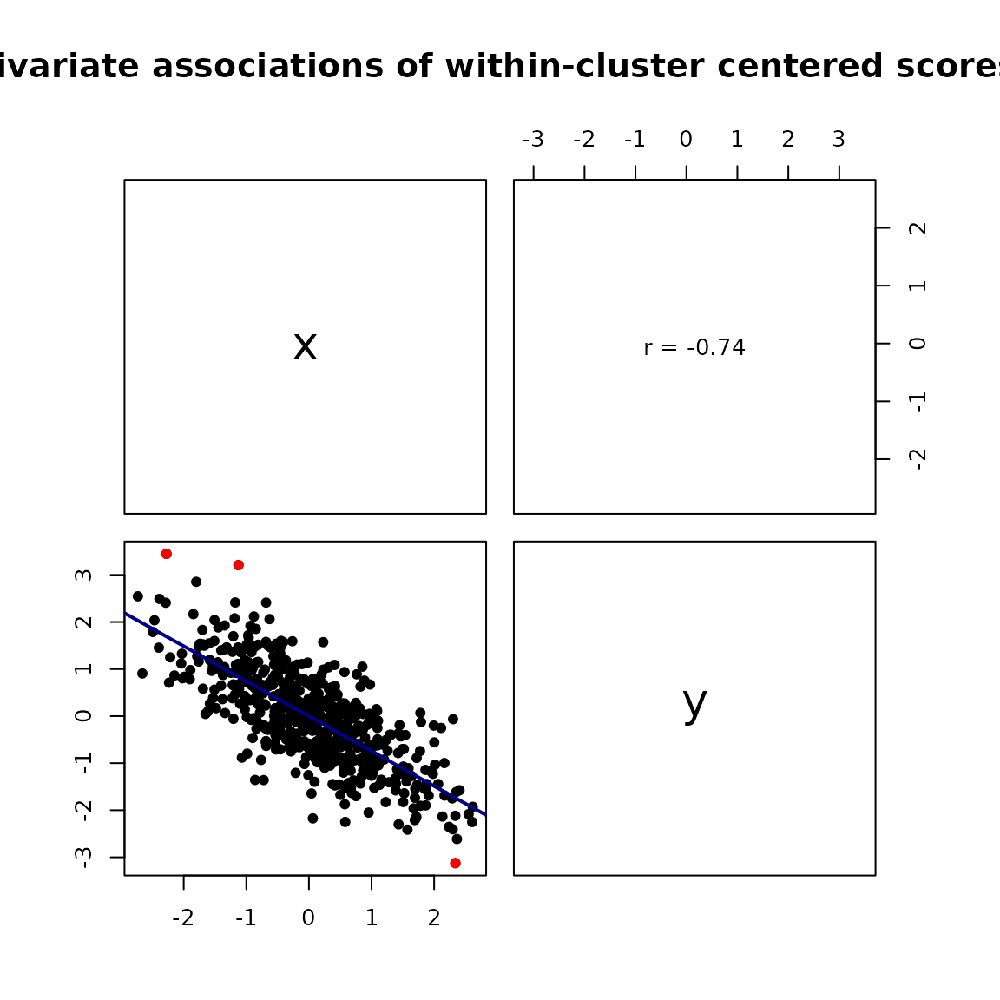
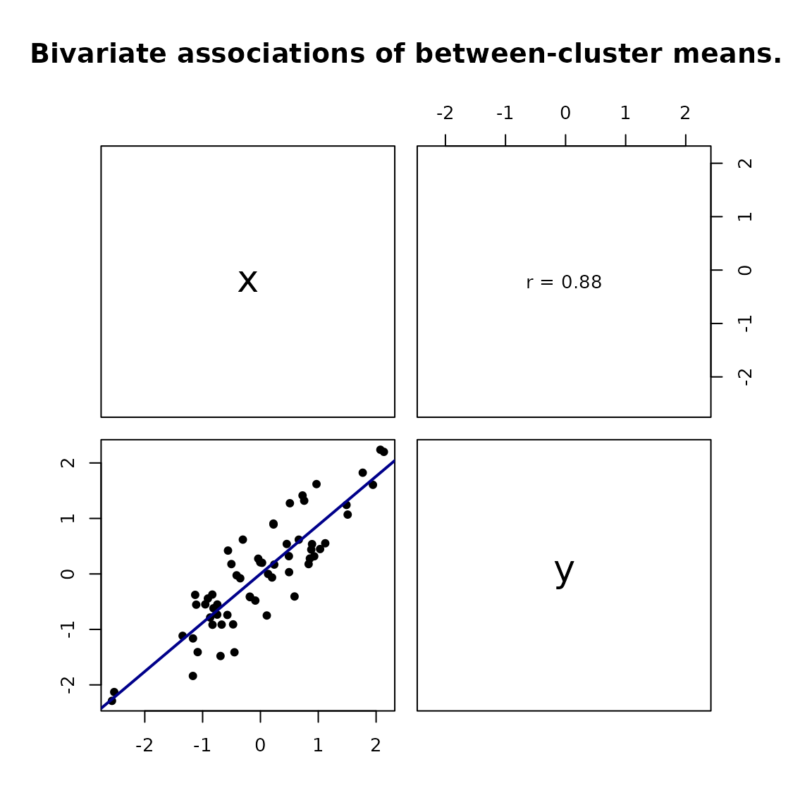

Within- and between-cluster correlations
Source:vignettes/within-between-correlations.Rmd
within-between-correlations.RmdRepeated observations contain at least two kinds of association. A between-cluster correlation asks whether clusters with higher values on one variable also tend to have higher values on another. A within-cluster correlation asks whether deviations from a cluster’s usual level move together. These correlations can differ in size or even have opposite signs, so a single correlation calculated from all rows can be misleading.
This vignette demonstrates the basic wbCorr workflow
with repeated measurements nested in people.
A contrasting example
The data below are constructed so that people with higher average
x also have higher average y. Within a person,
however, occasions with higher x than usual tend to have
lower y than usual.
set.seed(2026)
n_people <- 60
n_occasions <- 10
person <- rep(seq_len(n_people), each = n_occasions)
person_x <- rnorm(n_people, sd = 2)
person_y <- 0.8 * person_x + rnorm(n_people, sd = 0.5)
occasion_x <- rnorm(n_people * n_occasions)
occasion_y <- -0.7 * occasion_x + rnorm(n_people * n_occasions, sd = 0.6)
dat <- data.frame(
person = person,
x = rep(person_x, each = n_occasions) + occasion_x,
y = rep(person_y, each = n_occasions) + occasion_y
)
round(cor(dat$x, dat$y), 2)
#> [1] 0.55The pooled correlation is positive, but it combines the two levels of association.
Separate the two levels
Pass the data and the name of the cluster variable to
wbCorr(). Using inference = "none" is
convenient when only the coefficients are needed.
Inspect the correlation matrices
For interactive use, summary() provides short selectors
for the most useful correlation matrices. Request the within-cluster
matrix with "w" and the between-cluster matrix with
"b".
summary(fit, "w")
#> $within
#> x y
#> x 1.00 -0.74
#> y -0.74 1.00
summary(fit, "b")
#> $between
#> x y
#> x 1.00 0.88
#> y 0.88 1.00Here the within-person correlation is negative while the between-person correlation is positive. The distinction answers two different questions; one coefficient should not be substituted for the other.
For a compact combined display, use "wb". Within-cluster
correlations appear above the diagonal, between-cluster correlations
appear below it, and ICCs appear on the diagonal. Use "bw"
to reverse the two triangles.
summary(fit, "wb")
#> $merged_wb
#> x y
#> x [0.79] -0.74
#> y 0.88 [0.77]Calling print(fit) prints a compact preview of the
detailed result tables.
Plot the two levels
The corresponding centered data can be inspected visually.
plot(fit, "within")
#> This may take a while...
Within-person association after subtracting each person’s variable means.
plot(fit, "between")
#> This may take a while...
Between-person association among person-level variable means.
Extract results for further work
The summary() shortcuts are convenient for inspection.
For programmatic use, get_table() returns the full results
and pair-specific diagnostics, while get_matrix() returns
selected matrices. Set numeric = TRUE when unrounded
numeric coefficients are needed for downstream calculations.
tables <- get_table(fit)
within_table <- tables$within
within_matrix <- get_matrix(fit, "w", numeric = TRUE)$within
merged_matrix <- get_matrix(fit, "wb", numeric = TRUE)$merged_wbAdd uncertainty when needed
By default, Pearson correlations include analytic tests and confidence intervals. These are working approximations for clustered observations. For intervals that preserve top-level dependence, resample whole clusters instead.
set.seed(2026)
fit_boot <- wbCorr(
data = dat,
cluster = "person",
inference = "cluster_bootstrap",
nboot = 1000
)Use substantially more than the technical minimum number of bootstrap
replicates for substantive analyses, and inspect
n_boot_valid in the detailed tables. See
?wbCorr for weighting, centering, missing-data, Spearman,
and diagnostic options.